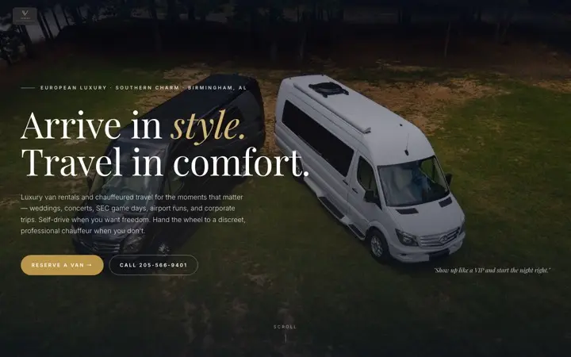
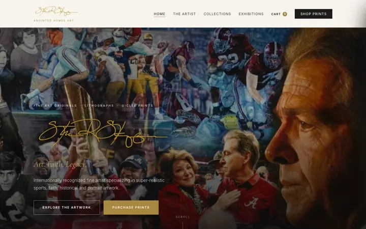

Web design in Birmingham, Alabama
Williams Digital is based in Birmingham. We design and build websites, dashboards, and client portals for local businesses across the metro — from Hoover and Vestavia Hills to Homewood, Mountain Brook, Trussville, and Leeds.
Built for Birmingham-area businesses.
Recent Birmingham-area work includes Vardar Transportation’s booking site and owner dashboard, WeAddALogo’s online store in Leeds, and the Steve R. Skipper Studio gallery site.

Vardar Transportation
Luxury van rentals and chauffeured travel in Birmingham — booking requests plus an owner dashboard.
Read the case study
WeAddALogo
Custom embroidery and DTF printing in Leeds, Alabama — Stripe storefront plus custom-order quotes.
Read the case study
Steve R. Skipper Studio
A gallery-first home for an internationally recognized sports, faith, and portrait artist.
Read the case studySwipe for more →
What we build for local businesses.
Serving Hoover, Vestavia Hills, Homewood, Mountain Brook, Trussville, Leeds, Pelham, Alabaster.
- Website designCustom-designed, hand-coded sites that load fast, rank locally, and turn visitors into calls and bookings.
- Custom dashboardsThe back office your team actually uses — leads, jobs, bookings, customers, and revenue in one screen.
- Client portalsSecure logins where your customers track progress, share files, approve work, and pay.
- EcommerceOnline stores with Stripe Checkout, sales tax, pickup or shipping — and a catalog you manage yourself.
- Apps & platformsDirectories, marketplaces, booking systems, SaaS, and iOS apps — taken from idea to launch.
- Municipal & communityAccessible, mobile-first sites for towns and communities — events, documents, forms, and staff publishing.
Have something you want built?
Tell us about your business in a two-minute form. You will get a call, a fixed written quote, and a realistic timeline — usually within one business day.